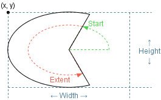
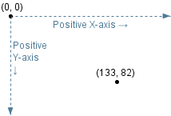

public class Arc extends Drawable2D
Draw an arc as a section of an ellipse

Arcs are sections of ellipses, inscribed within their rectangular bounding box.
NO_STROKE, TRANSPARENT| Constructor and Description |
|---|
Arc(double x,
double y,
double width,
double height,
double start,
double extent,
DrawingPanel drawingPanel)
Construct a new arc
|
| Modifier and Type | Method and Description |
|---|---|
double |
getAngleExtent()
Extent angle of arc
|
double |
getAngleStart()
Start angle of arc
|
protected Arc2D |
getShapeAsArc()
Underlying
Arc2D geometry
|
void |
setShape(Shape shape)
Replace the underlying
Shape geometry of the component
|
getShape, getShapeAsRectangularShape,
isEmpty, setFrame,
setHeight, setLocation,
setWidth, translate
close, contains, contains,
contains,
contains,
draw, finalize, getBounds, getDrawingPanel,
getFillColor, getHeight, getLocation, getPathIterator,
getStroke, getStrokeColor, getWidth, getX, getY, intersects,
intersects,
removeFromDrawingPanel,
setDrawingPanel,
setFillColor,
setStroke, setStrokeColor,
setX, setYpublic Arc(double x,
double y,
double width,
double height,
double start,
double extent,
DrawingPanel drawingPanel)
Construct a new arc
All window coordinates are measured in pixels, with the X-axis increasing from left to right and the Y-axis increasing from top to bottom. All window coordinates exist in the first quadrant.

x - coordinate of originy - coordinate of originwidth - in pixelsheight - in pixelsstart - angle in degrees (measured counter-clockwise from 0° (a.k.a. "east")extent - angle in degrees of the arc (measured counter-clockwise from start)drawingPanel - on which to drawprotected Arc2D getShapeAsArc()
Arc2D geometry
Arc2D geometry
public void setShape(Shape shape) throws DrawableException
Drawable2D
Replace the underlying Shape geometry of the component
Replacing the Shape geometry leaves other
characteristics (fill, stroke) untouched.
setShape in class Drawable2Dshape - of geometryDrawableException - if shape is
incompatible with the class
public double getAngleStart()
Arc2D.getAngleStart()public double getAngleExtent()
Arc2D.getAngleExtent()Copyright © 2018. All rights reserved.